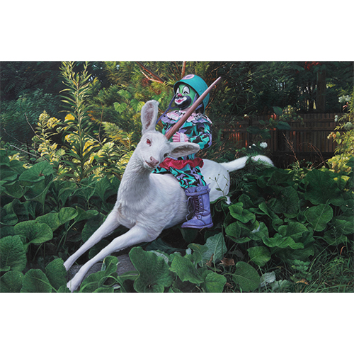

Exhibitions
SCOPE Miami 2011, Corey Helford Gallery, Miami, Florida, US, November 30–December 1, 2011.
Literature
Ron English, Fauxlosophy: The Art of Ron English (San Francisco: Last Gasp, 2008), p. 102. ISBN 978-0867196566.
Ron English, Original Grin: The Art of Ron English (Paris: Cernunnos, 2019), p. 106. ISBN 978-2374950938.
Ron English, Status Factory: The Art of Ron English (San Francisco: Last Gasp of San Francisco, 2014), p. 42. ISBN 978-0867197891.
Notes
Also known as Unicorn Calvary.
The work is also documented on Corey Helford Gallery’s dedicated exhibition object page for Unicorn Calvary, under SCOPE MIAMI 2011, accessed April 6, 2026.
In Death and the Eternal Forever, this work was erroneously reported as 21x36 inches.